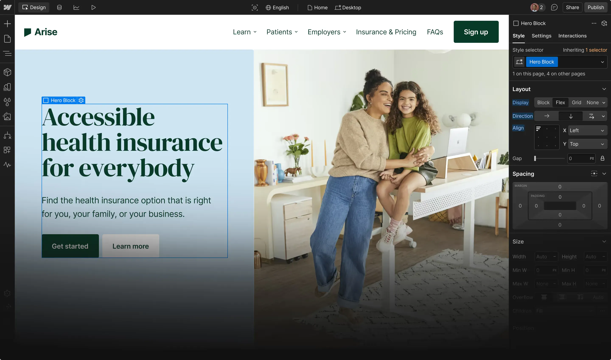
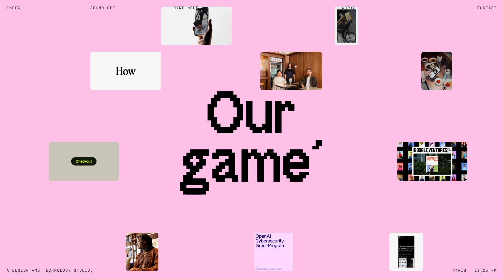
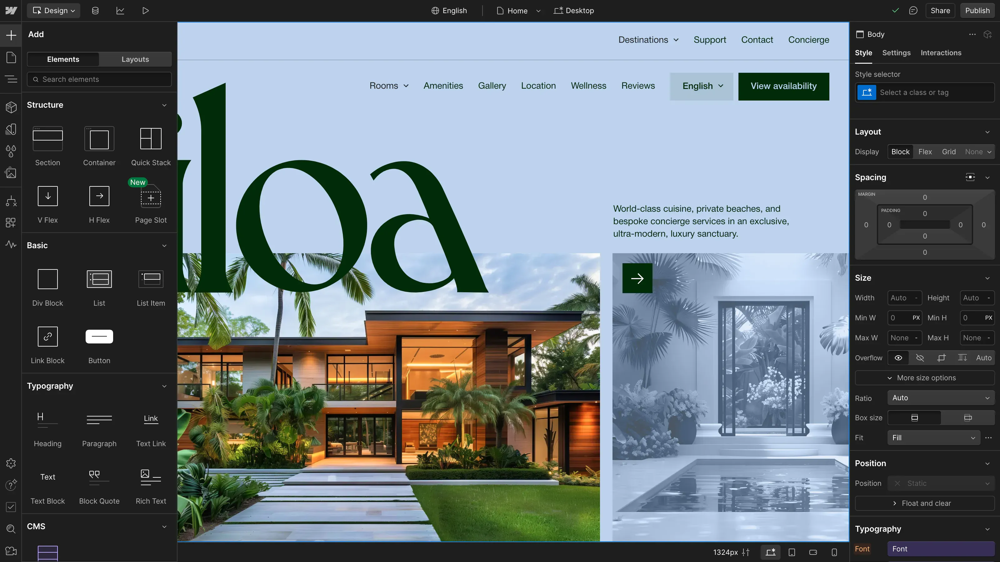
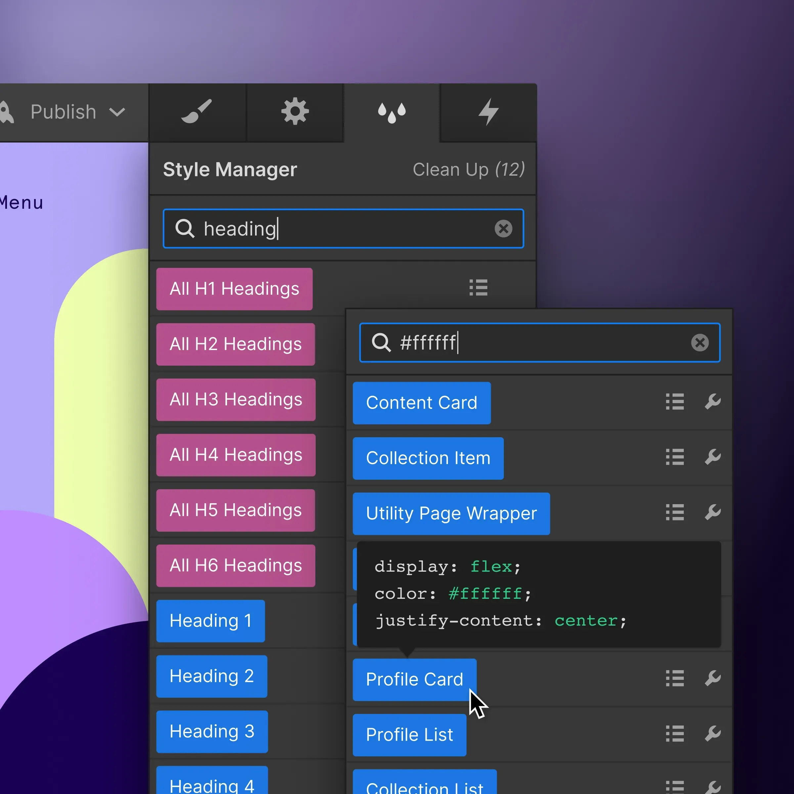
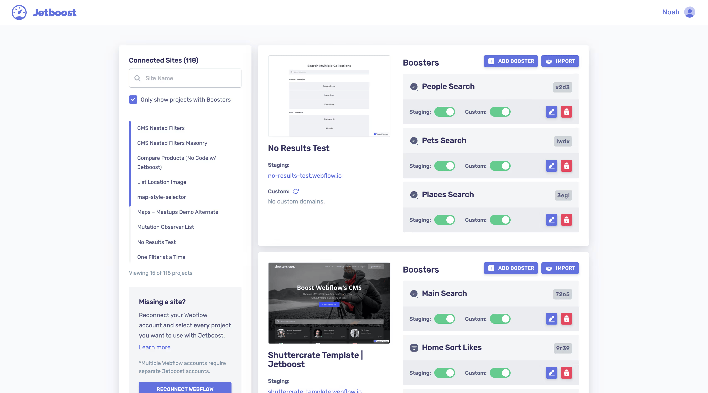

Webflow : Le guide ultime en 2025

Arrêtez de vous limiter avec des outils qui brident votre créativité.
Vous connaissez la situation. Ces plateformes qui vous promettent de créer un site "pro" en trois clics, puis vous coincent dans un carcan rigide dès que vous souhaitez sortir des sentiers battus. Où chaque tentative de personnalisation se heurte à un "cette fonctionnalité n'est disponible que dans le forfait premium". Où votre vision créative se réduit à ce que la plateforme veut bien vous permettre de faire.
Il existe une alternative. Et non, ce n'est pas un autre constructeur visuel limité où vous êtes condamné à créer des sites qui ressemblent à tous les autres - ces clones qu'on reconnaît au premier coup d'œil.
Bienvenue dans l'univers de Webflow, l'outil qui a enfin compris que vous méritez mieux que des blocs préfabriqués et des templates génériques.
Qu'est-ce que Webflow, au juste ?
En termes simples ? Webflow est une plateforme de création web qui offre la puissance du code sans vous obliger à l'écrire.
En termes concrets ? C'est le mariage parfait entre la flexibilité d'un développement sur mesure et l'accessibilité d'un constructeur visuel.
Mais attention : Webflow n'est pas "encore un autre constructeur de site". C'est une plateforme complète de développement web qui combine :
- Un puissant éditeur visuel qui génère du code propre
- Un système de gestion de contenu (CMS) flexible
- Des fonctionnalités e-commerce intégrées
- Des capacités d'animation et d'interaction sophistiquées
- Un hébergement optimisé et sécurisé
La différence fondamentale ? Webflow ne vous emprisonne pas dans des templates rigides. Vous construisez exactement ce que vous voulez, pixel par pixel, avec une liberté créative totale, sans sacrifier la qualité technique ou la facilité de maintenance.
[Vous souhaitez comparer Webflow à d'autres plateformes comme WordPress, Shopify ou Wix? Consultez notre article dédié aux comparatifs pour faire le meilleur choix.]

Pourquoi Webflow change la donne (et pas qu'un peu)
Un code propre, enfin accessible à tous
Si vous avez déjà utilisé un constructeur visuel, vous connaissez le problème : le code généré est souvent un cauchemar indéchiffrable. Un bazar de divs imbriqués et de classes génériques qui rendrait fou n'importe quel développeur.
Webflow ? C'est l'exact opposé. Le code généré est si propre que des développeurs front-end chevronnés l'utilisent pour prototyper rapidement.
"Webflow représente un tournant historique dans la façon dont le web est construit. Pour la première fois, un outil visuel produit du code que les développeurs respectent."
Vlad Magdalin, co-fondateur et CEO de Webflow
Concrètement, cela signifie :
- Un site plus rapide (crucial pour le SEO)
- Une compatibilité navigateur irréprochable
- Une base solide pour les évolutions futures
- La possibilité d'exporter votre code si besoin
Un CMS qui redéfinit la gestion de contenu
Le système de gestion de contenu de Webflow est une petite révolution en soi.
Imaginez un CMS où vous pouvez :
- Créer des types de contenu personnalisés en quelques clics
- Définir exactement comment ils s'affichent sur votre site
- Établir des relations complexes entre différents types de contenu
- Filtrer et trier dynamiquement votre contenu
Tout ça, sans plugin supplémentaire, sans code, sans complications.
Vous voulez un blog ? Facile.Un catalogue de produits ? Simple.Un système de documentation complexe avec différentes catégories et tags ? Aucun problème.

[Pour une analyse approfondie des différences entre le CMS de Webflow et d'autres systèmes populaires, consultez notre comparatif dédié.]
Design responsive qui fonctionne vraiment
Créer un site qui s'adapte parfaitement à tous les écrans est souvent un cauchemar. Trop de plateformes vous promettent un design "responsive" qui se révèle désastreux dès qu'on sort des dimensions standard.
Webflow aborde le responsive design de manière fondamentalement différente :
- Vous contrôlez précisément l'apparence de votre site sur chaque breakpoint
- Vous pouvez masquer, réorganiser ou transformer des éléments selon la taille d'écran
- Vous visualisez en temps réel comment votre site s'adapte
Résultat ? Un site qui fonctionne impeccablement sur tous les appareils, du smartphone à l'écran 4K.
Animations et interactions sans limite
Oubliez les animations génériques ou les interactions basiques. Avec Webflow, vous pouvez créer :
- Des animations déclenchées au scroll
- Des transitions entre pages
- Des interactions complexes basées sur les actions utilisateurs
- Des séquences d'animation sophistiquées
Sans écrire une seule ligne de JavaScript. Sans plugin tiers. Directement dans l'interface visuelle.
C'est comme avoir un outil de prototypage avancé et un environnement de production dans la même plateforme.

L'anatomie de Webflow : les composants clés
Comprendre Webflow, c'est comme découvrir les commandes d'une voiture de sport après avoir conduit une citadine basique. Au début, ça peut intimider. Mais une fois les bases maîtrisées, vous vous demanderez comment vous avez pu vous contenter de moins.
Le Designer : votre cockpit de création
Le Designer Webflow est le cœur de la plateforme - c'est ici que la magie opère. Contrairement à d'autres éditeurs visuels, le Designer Webflow offre un contrôle précis sur chaque aspect de votre site.
Le canevas central est votre zone de travail principale, où vous construisez visuellement votre site.

Le panneau latéral gauche contient :
- L'onglet Add, avec tous les éléments que vous pouvez ajouter à votre page
- L'onglet Navigator, qui affiche la structure hiérarchique de votre page
- L'onglet Pages, pour gérer toutes vos pages et templates
- L'onglet CMS, pour définir et gérer vos collections de contenu
- L'onglet Ecommerce, pour configurer votre boutique en ligne
- L'onglet Symbols, pour créer des composants réutilisables
- L'onglet Assets, pour gérer vos images et autres fichiers
Le panneau latéral droit comprend :
- L'onglet Style, pour contrôler l'apparence de chaque élément
- L'onglet Settings, pour les paramètres de l'élément sélectionné
- L'onglet Interactions, pour créer des animations et des interactions
La barre supérieure contient :
- Les contrôles de breakpoint pour le design responsive
- Les options de prévisualisation et de publication
- Les contrôles d'annulation/rétablissement
- Les options d'exportation et de partage
Cette interface complète peut sembler intimidante au premier abord, mais elle est conçue de manière logique et vous offre un accès direct à toutes les fonctionnalités dont vous avez besoin.
Le système de classes : la puissance du CSS visuel
Le système de classes de Webflow est l'un de ses atouts majeurs. Il vous permet de contrôler visuellement ce qui serait normalement écrit en CSS.
Les classes sont le cœur du système de style Webflow. Au lieu d'appliquer des styles directement aux éléments (ce qui crée un cauchemar de maintenance), vous créez des classes réutilisables :
- Classes régulières : Styles de base appliqués à plusieurs éléments
- Classes combinées : Plusieurs classes appliquées à un même élément
- États : Styles spécifiques pour différents états (hover, focus, etc.)
- Classes globales : Styles partagés à travers tout le site
Ce système vous permet de maintenir une cohérence visuelle et de faire des changements globaux en modifiant une seule classe - exactement comme le feraient les développeurs professionnels.

La hiérarchie des éléments : la fondation structurelle
Dans Webflow, tout s'organise selon une hiérarchie claire d'éléments HTML :
- Body : Le conteneur principal de votre page
- Sections : Grandes divisions horizontales de votre page
- Containers : Éléments qui centrent et contraignent la largeur du contenu
- Grids : Systèmes de mise en page en grille
- Flexboxes : Conteneurs flexibles pour des mises en page adaptatives
- Divs : Blocs génériques pour regrouper des éléments
- Éléments HTML standards : Paragraphes, titres, images, boutons, etc.
Cette hiérarchie reflète directement la structure DOM d'une page web, ce qui explique pourquoi le code généré est si propre et performant.
Le système CMS : dynamique et puissant
Le CMS de Webflow se compose de plusieurs éléments interconnectés :
- Collections : Définissent les types de contenu (articles, produits, etc.)
- Champs : Les différentes données de chaque collection (titre, image, etc.)
- Templates : Comment chaque élément d'une collection s'affiche
- Pages de liste : Comment afficher plusieurs éléments d'une collection
- Filtres et tris : Pour organiser dynamiquement le contenu
- Relations : Pour lier différentes collections entre elles
Ce système flexible vous permet de créer pratiquement n'importe quelle structure de contenu, des plus simples aux plus complexes.
L'éditeur d'interactions : animations sans code
L'éditeur d'interactions de Webflow se divise en deux modes principaux :
- Interactions de page : Animations déclenchées par des événements de page (chargement, scroll, etc.)
- Interactions d'élément : Animations déclenchées par des actions sur des éléments spécifiques (clic, hover, etc.)
Pour chaque interaction, vous définissez :
- Un déclencheur (quand l'animation se produit)
- Des actions (ce qui se passe)
- Des paramètres (comment ça se passe : durée, timing, etc.)
Cet éditeur visuel vous permet de créer des animations qui nécessiteraient normalement du JavaScript avancé, le tout sans écrire une ligne de code.
Le système E-commerce : boutique intégrée
L'e-commerce Webflow comprend tous les éléments nécessaires pour une boutique en ligne :
- Produits : Physiques, numériques, avec variantes
- Catégories : Organisation de votre catalogue
- Panier : Entièrement personnalisable visuellement
- Checkout : Processus d'achat optimisé
- Paiements : Intégrations avec Stripe, PayPal, etc.
- Commandes : Gestion et suivi des achats
- Emails : Notifications transactionnelles automatisées
Chaque aspect de votre boutique peut être personnalisé visuellement, ce qui distingue Webflow E-commerce de nombreuses autres plateformes.
Le système de publication : de la conception au déploiement
Webflow simplifie le processus de mise en ligne grâce à :
- Environnements : Développement vs production
- Staging : Preview de vos modifications avant publication
- Versioning : Sauvegarde des versions précédentes
- Déploiement : Publication en un clic sur les serveurs Webflow
- SSL : Certificats SSL automatiques
- CDN : Réseau de distribution de contenu mondial
Ce système élimine les complexités habituelles du déploiement web et vous permet de publier vos modifications instantanément et en toute sécurité.
Besoin d'experts Webflow pour votre projet ?
Vous êtes convaincu par les capacités de Webflow, mais vous n'avez pas le temps d'apprendre une nouvelle plateforme ? Ou peut-être avez-vous besoin d'un site particulièrement complexe qui nécessite une expertise avancée ?
Studio Namma est votre partenaire idéal pour transformer votre vision en réalité avec Webflow.
Notre équipe de designers et développeurs certifiés Webflow crée des sites web professionnels qui se démarquent par leur design, leurs performances et leur conversion.
Que vous ayez besoin d'un site vitrine élégant, d'une plateforme e-commerce performante ou d'un système CMS complexe, nous concevons des solutions sur mesure qui répondent précisément à vos objectifs.
Contactez Studio Namma dès aujourd'hui pour discuter de votre projet et découvrir comment nous pouvons vous aider à exploiter tout le potentiel de Webflow.
Comment fonctionne Webflow concrètement ?
L'interface de Webflow : intimidante mais puissante
Première chose à admettre : l'interface de Webflow peut sembler intimidante au premier abord.
Il y a beaucoup de boutons, d'options, de panneaux. C'est normal. Vous regardez un cockpit d'avion, pas les commandes d'une trottinette.
L'interface se divise en plusieurs zones clés que nous avons détaillées dans la section Anatomie ci-dessus.
La courbe d'apprentissage existe, c'est indéniable. Mais contrairement à ce que certains prétendent, elle n'est pas insurmontable. Si vous avez déjà utilisé Photoshop ou Figma, vous vous sentirez rapidement à l'aise.
Et la récompense vaut largement l'effort initial.
La hiérarchie des éléments : pensez en boîtes
Le secret pour maîtriser Webflow? Comprendre comment les éléments s'organisent.
Tout dans Webflow (comme dans le web en général) fonctionne selon le principe des boîtes qui contiennent d'autres boîtes :
- Les Sections contiennent des Containers
- Les Containers contiennent des Grids ou des Flexbox
- Ces derniers contiennent d'autres éléments
Cette structure en poupées russes est fondamentale pour créer des designs solides et adaptables.
Contrairement à d'autres constructeurs qui cachent cette réalité derrière des interfaces simplistes (et limitantes), Webflow vous donne un contrôle total sur cette hiérarchie.

Les classes et styles : la magie de Webflow
Si vous êtes allergique au CSS, respirez profondément. Webflow a révolutionné la façon dont on gère les styles.
Au lieu d'attribuer des styles directement aux éléments (ce qui crée un cauchemar de maintenance), Webflow utilise un système de classes inspiré des meilleures pratiques CSS :
Classes standards : Les styles de base pour vos élémentsClasses combinées : Pour réutiliser des styles communsÉtats : Pour définir l'apparence au survol, au clic, etc.Variantes : Pour créer des versions alternatives d'un même composant
Ce système vous permet de :
- Maintenir une cohérence visuelle sur tout votre site
- Effectuer des changements globaux en modifiant une seule classe
- Créer des composants réutilisables
- Structurer vos styles de manière professionnelle
C'est exactement comme un développeur front-end organiserait son CSS, mais avec une interface visuelle intuitive.
Le CMS de Webflow : structurez votre contenu comme un pro
Créer des collections : la base de tout
Dans Webflow, votre contenu s'organise en "Collections" - des types de contenus personnalisables et flexibles.
Une collection peut être tout ce que vous voulez :
- Des articles de blog
- Des produits
- Des témoignages clients
- Des membres d'équipe
- Des événements
- Vraiment n'importe quoi qui nécessite plusieurs entrées similaires
Pour chaque collection, vous définissez exactement quels champs elle contient : texte, images, nombres, dates, fichiers, relations avec d'autres collections...
C'est comme concevoir votre propre base de données, sans connaître SQL.
Les Templates de Collection : la puissance du dynamique
Une fois vos collections créées, vous définissez comment elles s'affichent grâce aux "Collection Templates".
Imaginez-les comme des moules qui déterminent l'apparence de chaque entrée de votre collection.
Par exemple, pour un blog, vous créez un template d'article qui définit :
- L'emplacement du titre
- Comment l'image principale s'affiche
- La mise en page du contenu
- L'affichage des métadonnées (date, auteur, catégories)
Le génie du système ? Vous concevez visuellement ce template une seule fois, et il s'applique automatiquement à tous vos articles - actuels et futurs.

Les Collection Lists : lister, filtrer et organiser
Comment afficher plusieurs entrées d'une collection ? Grâce aux "Collection Lists ».
Ces pages spéciales vous permettent de :
- Afficher des listes de votre contenu
- Définir combien d'éléments apparaissent par page
- Créer des systèmes de pagination
- Ajouter des filtres et des tris dynamiques
- Personnaliser l'apparence de chaque élément de la liste
C'est la solution parfaite pour vos pages de blog, catalogues de produits, annuaires, ou toute autre page qui affiche plusieurs éléments similaires.
E-commerce avec Webflow : vendre sans les maux de tête
Si vous avez déjà monté une boutique en ligne, vous connaissez la complexité habituelle : plugins à configurer, passerelles de paiement capricieuses, templates rigides...
Webflow E-commerce simplifie drastiquement ce processus tout en gardant une flexibilité totale sur le design.
Ce que vous pouvez faire :
Gestion de produits complète : Créez des produits physiques ou numériques, avec variantes, options, et gestion de stock.
Design personnalisé à 100% : Contrairement à la plupart des plateformes e-commerce, vous contrôlez exactement comment vos produits, panier et checkout s'affichent.
Intégrations de paiement : Stripe, PayPal, Apple Pay, Google Pay... sans plugins supplémentaires.
Gestion des taxes automatisée : Webflow calcule automatiquement les taxes selon la localisation de vos clients.
Emails transactionnels personnalisables : Confirmations de commande, notifications d'expédition, etc.
Les limites à connaître :
Soyons transparents : Webflow E-commerce n'est pas universel. Il existe quelques limitations :
- Maximum de 500 produits (suffisant pour la plupart des boutiques)
- Pas de système d'abonnement natif (bien que des solutions existent via intégrations)
- Fonctionnalités B2B limitées
[Pour une comparaison détaillée avec d'autres plateformes e-commerce comme Shopify ou WooCommerce, consultez notre article dédié.]
Intégrations et extensions : au-delà des bases
Webflow n'existe pas en vase clos. Il s'intègre parfaitement avec l'écosystème digital plus large.
Intégrations natives et API
Webflow offre des intégrations directes avec de nombreux services essentiels :
- Google Analytics
- Facebook Pixel
- Google Tag Manager
- Google Maps
- Et bien d'autres
Pour les besoins plus spécifiques, l'API Webflow permet de connecter pratiquement n'importe quel service externe.
Webflow Apps : l'écosystème qui s'étend
La grande nouveauté de ces dernières années : Webflow Apps. Cette plateforme d'extensions permet d'ajouter des fonctionnalités avancées sans quitter l'environnement Webflow :
- Systèmes de recherche avancés
- Intégrations CRM
- Outils d'optimisation SEO
- Systèmes de réservation
- Fonctionnalités communautaires
Bien que récent, cet écosystème grandit rapidement et étend considérablement ce que Webflow peut faire nativement.
Performances et SEO : les atouts cachés de Webflow
Un code qui fait plaisir à Google
Le SEO n'est pas qu'une question de contenu et de backlinks. La qualité technique de votre site est cruciale.
Webflow excelle dans ce domaine :
- HTML sémantique et propre
- Temps de chargement optimisés
- Core Web Vitals excellents par défaut
- Structure adaptée au mobile-first indexing
Une étude de Backlinko a montré que les sites Webflow obtiennent en moyenne des scores Core Web Vitals 22% supérieurs aux autres plateformes similaires.
Le contrôle total sur vos métadonnées
Webflow vous donne un contrôle granulaire sur tous les éléments SEO importants :
- Titres et méta-descriptions personnalisables pour chaque page
- Alt-text pour toutes les images
- Structure d'URL personnalisable
- Balisage schéma.org
- Gestion des redirections 301
- Sitemaps générés automatiquement
Images optimisées automatiquement
Les images lourdes sont l'ennemi numéro un des performances web.
Webflow résout ce problème automatiquement :
- Compression intelligente des images
- Redimensionnement adaptatif selon l'appareil
- Formats modernes (WebP, AVIF) servis aux navigateurs compatibles
- Lazy loading natif
Résultat ? Vos pages se chargent plus vite, vos utilisateurs sont plus satisfaits, et Google vous récompense dans les classements.
Hébergement Webflow : rapide, sécurisé, mais pas donné

Webflow n'est pas qu'un constructeur de site - c'est aussi une plateforme d'hébergement.
Les avantages de l'hébergement Webflow
- CDN mondial : Votre site est distribué sur un réseau mondial de serveurs, garantissant des temps de chargement rapides partout.
- SSL inclus : Certificats SSL/TLS automatiques et gratuits.
- Mises à jour et sécurité gérées: Aucune maintenance de serveur à gérer.
- Scaling automatique : Votre site peut gérer des pics de trafic sans intervention.
- Backups automatiques : Vos données sont sauvegardées régulièrement.
Le coût à considérer
Soyons francs : l'hébergement Webflow n'est pas le moins cher du marché.
Les plans commencent à 14$/mois pour un site basique, 39$/mois si vous utilisez le CMS, et 79$/mois pour l'e-commerce.
C'est plus que des hébergeurs classiques, certes. Mais vous payez pour un service tout-en-un : pas besoin de gérer séparément l'hébergement, la sécurité, les mises à jour, etc.
Pour beaucoup, ce prix est justifié par le temps et les maux de tête épargnés.
Webflow et l’IA : l’intelligence comme copilote créatif
En 2025, l’intelligence artificielle est devenue un véritable atout intégré à l’écosystème Webflow. Elle n’est pas là pour remplacer le designer ou le développeur, mais pour accélérer la création, automatiser les tâches répétitives et ouvrir de nouvelles possibilités sans sacrifier le contrôle créatif.
AI Site Builder
Lancé début 2025, le AI Site Builder permet de générer automatiquement une homepage, un style guide et des pages complémentaires à partir d’un simple brief textuel. L’outil vous propose plusieurs variantes de design cohérentes avec votre identité (typographie, couleurs, mise en page) que vous pouvez ensuite ajuster manuellement dans le Designer. Une base solide pour démarrer un projet plus rapidement, sans repartir de zéro.

AI Assistant
L’AI Assistant de Webflow, accessible directement dans le Designer, facilite le quotidien des créateurs de site :
- Il propose des sections prêtes à l’emploi (témoignages, grilles de tarifs, call-to-action, etc.) directement intégrées à votre design actuel.
- Il génère du texte automatiquement pour vos pages ou vos collections CMS.
- Il répond à vos questions en contexte, en s’appuyant sur la documentation officielle.
- Il analyse la structure de votre site et propose des optimisations techniques ou SEO.
Cet assistant s’utilise comme un copilote, qui vous aide à gagner du temps tout en gardant la main sur le résultat.

Optimize : l’A/B testing boosté à l’IA
Avec Webflow Optimize, vous pouvez désormais lancer des tests A/B directement dans le Designer. L’intelligence artificielle vous suggère automatiquement des variantes de contenu ou de design (titre, image, bouton, etc.), que vous pouvez activer en un clic. Les résultats sont mesurés en temps réel pour optimiser la conversion de vos pages sans effort supplémentaire.

Localization & Traduction IA
La fonctionnalité de localisation multilingue intègre désormais la traduction automatique via l’IA. Elle vous permet de dupliquer facilement votre site dans plusieurs langues, d’optimiser chaque version pour le SEO local, et de gérer les traductions dynamiquement. Un gain de temps considérable pour les projets internationaux.
Webflow Apps & IA externes
L’écosystème Webflow s’enrichit également de nombreuses applications IA via la marketplace : génération de visuels, création de contenu optimisé, chatbots intelligents, personnalisation en temps réel, analyse comportementale… Ces outils s’intègrent nativement à vos projets et décuplent les possibilités sans quitter Webflow.
L’intelligence artificielle dans Webflow ne remplace pas la création, elle l’amplifie. Que ce soit pour générer un site en un brief, créer du contenu, optimiser vos performances ou gérer vos traductions, l’IA devient un partenaire fiable pour aller plus vite et plus loin – sans jamais perdre la maîtrise de votre design.
Collaborer sur Webflow : le travail d'équipe simplifié
Travail collaboratif et workflow
Si vous travaillez en équipe, Webflow propose des fonctionnalités de collaboration efficaces :
- Contrôle d'accès : Définissez exactement ce que chaque membre de l'équipe peut voir et modifier.
- Mode commentaires : Laissez des notes directement sur les éléments du site.
- Historique des versions : Revenez à n'importe quelle version précédente si nécessaire.
- Environnements de développement : Travaillez sur votre site sans affecter la version publiée.
- Système d'approbation : Contrôlez ce qui est publié et quand.
L'éditeur de contenu : parfait pour vos clients
L'une des forces majeures de Webflow est son mode "Edit" - une interface simplifiée conçue pour les clients ou les équipes de contenu.
Cet outil permet aux non-techniciens de :
- Mettre à jour du texte et des images
- Ajouter de nouveaux articles ou produits
- Modifier du contenu existant
- Programmer des publications
Sans jamais toucher au design ou à la structure du site.
C'est la solution parfaite pour les agences ou freelances qui veulent donner de l'autonomie à leurs clients sans risquer qu'ils ne cassent le design.

Les tendances Webflow en 2025
Le monde Webflow évolue constamment. Voici les tendances majeures que nous observons en 2025 :
Micro-interactions et animations avancées
Les sites statiques sont définitivement dépassés. Les utilisateurs s'attendent maintenant à des expériences interactives et engageantes. Webflow a considérablement amélioré ses capacités d'animation, permettant des micro-interactions sophistiquées qui étaient autrefois réservées aux développeurs JavaScript avancés.
Les animations réactives au scroll, les transitions entre pages fluides, et les interactions basées sur le comportement utilisateur sont devenues la norme.
Design systems complets
La création de systems designs complets est devenue beaucoup plus accessible avec Webflow. Les équipes de design utilisent désormais :
- Des bibliothèques de composants réutilisables
- Des systèmes de styleguide intégrés
- Des thèmes et modes (clair/sombre) facilement implémentables
- Des variants de composants pour différents contextes
Cette approche systématique permet une cohérence visuelle et une évolution plus rapide des sites.
Accessibilité native
L'accessibilité n'est plus une réflexion après-coup. Webflow a intégré des outils d'accessibilité directement dans le Designer :
- Vérification automatique des contrastes
- Suggestions d'amélioration pour la navigation au clavier
- Support amélioré des lecteurs d'écran
- Tests d'accessibilité intégrés
Ces fonctionnalités aident les designers à créer des sites inclusifs dès le départ.
Patterns émergents
Plusieurs patterns de design sont devenus populaires dans l'écosystème Webflow :
- Interfaces 3D légères intégrées directement dans le navigateur
- Typographie dynamique et réactive
- Grilles modulaires et adaptatives
- Interfaces basées sur les gestes (notamment sur mobile)
Ces tendances montrent comment Webflow continue de repousser les limites de ce qui est possible sans code.
Combien coûte vraiment Webflow ?
Parlons argent. Webflow propose plusieurs niveaux de tarification organisés en différentes catégories :
Plans de site (pour héberger et publier)
Plans généraux :
- Starter : Gratuit - Pour découvrir Webflow (domaine webflow.io, 2 pages, 20 collections CMS, 50 items CMS)
- Basic : 14$/mois - Pour les sites simples et statiques (domaine personnalisé, 150 pages, pas de CMS)
- CMS : 23$/mois - Pour les sites avec contenu dynamique (150 pages, 20 collections CMS, 2 000 items CMS)
- Business : 39$/mois - Pour les sites plus complexes (300 pages, 40 collections CMS, items CMS illimités)
- Enterprise : Sur mesure - Pour les grandes organisations avec besoins spécifiques
Plans E-commerce :
- Standard : 29$/mois - Pour débuter (500 produits, 2 000 items CMS, 2% de frais de transaction)
- Plus : 74$/mois - Pour les volumes plus importants (5 000 produits, 10 000 items CMS, 0% de frais de transaction)
- Advanced : 212$/mois - Pour les grandes boutiques (15 000 produits, 10 000 items CMS, 0% de frais de transaction)

Plans Workspace (pour créer et collaborer)
- Starter : Gratuit - Pour débuter (1 siège complet, 2 sites staging, 2 invités agence/freelance)
- Core : 19$/mois - Pour les besoins staging étendus (10 sites staging, export de code)
- Growth : 49$/mois - Pour la collaboration avancée (sites staging illimités, permissions avancées)
- Enterprise : Sur mesure - Pour les grandes équipes
Options supplémentaires
- Optimize : À partir de 299$/mois - Pour les tests A/B et la personnalisation
- Analyze : À partir de 29$/mois - Pour les analytics avancées
- Localization : À partir de 9$/mois - Pour les sites multilingues
Plans professionnels
- Freelancer : 16$/mois - Pour les freelances avec quelques clients
- Agency : 35$/mois - Pour les agences avec de nombreux clients
La structure peut sembler complexe au premier abord, mais elle offre de la flexibilité : vous pouvez commencer avec un plan gratuit pour apprendre, puis évoluer selon vos besoins. Les prix sont affichés en facturation annuelle - la facturation mensuelle est légèrement plus élevée.
La courbe d'apprentissage : investissement ou obstacle ?
Soyons honnêtes : Webflow demande un investissement en temps initial plus important que des plateformes ultra-simplifiées.
Le vrai coût de la "facilité"
Les plateformes qui se vantent d'être "super faciles" cachent souvent un coût invisible : des limitations sévères dès que vous voulez sortir des sentiers battus.
Webflow prend l'approche inverse :
- Courbe d'apprentissage initiale plus raide
- Mais quasiment aucune limitation de ce que vous pouvez créer
C'est comme apprendre à conduire une voiture manuelle vs automatique. Un peu plus difficile au début, infiniment plus de contrôle sur la durée.
Ressources d'apprentissage exceptionnelles
Heureusement, Webflow propose les meilleures ressources d'apprentissage de l'industrie :
- Webflow University : cours vidéo complets et gratuits
- Documentation détaillée
- Communauté active sur le forum et Discord
- Milliers de tutoriels sur YouTube
Avec ces ressources, la plupart des utilisateurs atteignent un niveau de compétence satisfaisant en 2-4 semaines d'utilisation régulière.
Les extensions incontournables en 2025
L'écosystème Webflow Apps s'est considérablement développé. Voici quelques extensions devenues essentielles pour de nombreux projets :
Finsweet Client-First
Client‑First est une méthodologie créée par Finsweet pour structurer les projets Webflow de manière claire, cohérente et facile à maintenir. Elle repose sur un système de nommage rigoureux, une organisation logique des éléments, et des conventions partagées qui facilitent la collaboration – que vous soyez seul ou en équipe.
.webp)
Une structure pensée pour durer
Client‑First impose une architecture standard sur chaque page :
- page-wrapper : englobe tout le contenu du site (plutôt que d’utiliser directement le <body>)
- main-wrapper : contient le contenu principal de la page
- section-[nom] : pour chaque section identifiable du site
- padding-global : applique des marges latérales cohérentes sur tout le site
- container-[taille] : définit des largeurs maximales standardisées (small, medium, large…)
Ce squelette initial permet de démarrer chaque projet sur des bases solides, sans réinventer la roue.
Un système de nommage clair
L’un des points forts de Client‑First est sa logique de nommage :
- Les classes personnalisées (ex : hero-header, team-card) décrivent précisément la fonction de l’élément
- Les classes utilitaires (ex : text-align-center, margin-bottom-medium) sont génériques et réutilisables
- Les combo classes permettent d’adapter localement un style sans alourdir la base globale
Résultat : on retrouve facilement chaque élément, on évite les styles en double, et on peut modifier rapidement le design sans effet domino inattendu.
Pensé pour la collaboration
Client‑First facilite la lecture et la reprise d’un projet, même plusieurs mois plus tard. Que vous soyez freelance, en agence ou que vous passiez le relais à un développeur, la structure reste lisible et prévisible. C’est aussi un gain de temps pour les clients qui souhaitent effectuer des modifications simples sans risquer de casser l’ensemble.
En résumé : Client‑First, ce n’est pas juste une méthode de nommage, c’est une manière de penser et construire ses projets Webflow avec rigueur, efficacité et clarté. Une bonne pratique devenue quasi indispensable dès que l’on vise la scalabilité.
Jetboost
Ajoute des fonctionnalités de recherche et filtrage en temps réel à votre site Webflow. Indispensable pour les sites avec beaucoup de contenu ou de produits.
Avec Jetboost, vous pouvez créer :
- Des filtres dynamiques pour vos collections
- Des barres de recherche instantanées
- Des systèmes de favoris et de sauvegarde
- Des fonctionnalités de tri avancées
Ces capacités étendent considérablement les possibilités du CMS Webflow sans nécessiter de code personnalisé.

Memberstack
Permet d'ajouter des systèmes d'adhésion et d'accès restreint à votre site Webflow. Idéal pour les contenus premium, les communautés ou les cours en ligne.
Memberstack offre :
- Inscription et connexion des utilisateurs
- Gestion des abonnements et paiements
- Contrôle d'accès granulaire au contenu
- Profils utilisateurs personnalisables
Cette extension transforme un site Webflow statique en une véritable plateforme communautaire ou éducative.

Relume Library
Une bibliothèque de composants prêts à l'emploi qui accélère considérablement le processus de design. Particulièrement utile pour les prototypes et les lancements rapides.
La bibliothèque Relume propose :
- Des centaines de composants optimisés pour Webflow
- Des sections complètes prêtes à l'utilisation
- Des variations de style cohérentes
- Des mises en page adaptatives et responsives
Pour les designers qui veulent gagner du temps sans sacrifier la qualité, Relume est un outil précieux.
[Pour une liste complète et détaillée des meilleures extensions Webflow en 2025, consultez notre guide dédié.]

GSAP & Webflow : l’animation à un autre niveau
Webflow permet déjà de créer des interactions complexes sans écrire une ligne de code. Mais pour aller encore plus loin, GSAP (GreenSock Animation Platform) est devenu l’outil incontournable des designers et développeurs qui veulent des animations fluides, précises et immersives.
GSAP est une librairie d’animation JavaScript ultra-puissante, reconnue pour ses performances et sa souplesse. Elle s’intègre parfaitement à Webflow pour combler les limites de l’éditeur natif : effets de scroll avancés, séquences d’animation complexes, micro-interactions synchronisées ou transitions de pages entièrement customisées.
Avec GSAP, on gagne en contrôle : chaque détail peut être ajusté, synchronisé et animé avec fluidité, sans perte de performance. Elle est notamment utilisée en combinaison avec ScrollTrigger, une extension qui permet de déclencher des animations selon le comportement de l’utilisateur (scroll, visibilité, position à l’écran…).
De plus en plus d’agences intègrent GSAP dans leurs projets Webflow pour créer des expériences web haut de gamme : animations au scroll millimétrées, storytelling interactif, effets de texte dynamiques… Le tout, avec une compatibilité parfaite sur tous les navigateurs modernes.
Si Webflow est votre terrain de jeu, GSAP en est le moteur turbo. Une fois maîtrisée, cette combinaison ouvre la voie à un web plus vivant, plus engageant, et surtout plus créatif.

Est-ce que Webflow est fait pour vous ?
Webflow n'est pas la solution miracle pour tous les projets web. Voici qui devrait (et ne devrait pas) l'utiliser :
Webflow est idéal pour :
Les designers qui veulent coder sans coder : Si vous venez du monde du design et que vous voulez transformer vos maquettes en sites fonctionnels sans dépendre d'un développeur.
Les agences et freelances qui cherchent l'efficacité : Si vous créez régulièrement des sites pour des clients et que vous voulez un workflow plus rapide sans sacrifier la qualité.
Les entreprises qui veulent du sur-mesure sans le prix du sur-mesure : Si vous avez besoin d'un site qui reflète parfaitement votre marque, mais sans le budget d'un développement entièrement personnalisé.
Les startups qui ont besoin d'itérer rapidement : Si vous devez lancer rapidement et faire évoluer votre site au fur et à mesure que votre entreprise grandit.
Webflow n'est probablement pas pour vous si :
Votre site nécessite des fonctionnalités ultra-spécifiques : Pour certaines fonctionnalités très nichées, un développement personnalisé reste parfois nécessaire.
Vous gérez une très grande boutique e-commerce : Pour les boutiques de plus de 500 produits avec des besoins complexes, des plateformes spécialisées pourraient être plus adaptées.
Vous n'êtes pas prêt à investir dans l'apprentissage : Si vous voulez un site en 15 minutes sans aucune courbe d'apprentissage, vous passerez à côté de ce qui fait la force de Webflow.
Migrer vers Webflow : est-ce le bon moment ?
Si vous utilisez actuellement une autre plateforme, la question de la migration se pose.
Processus de migration
Le processus de migration vers Webflow implique généralement :
- Export de votre contenu (quand possible)
- Recréation de votre design dans Webflow
- Import manuel ou automatisé du contenu
- Redirection des URLs pour préserver le SEO
C'est l'occasion de repenser votre site et de l'améliorer, plutôt qu'une simple reproduction.
Le coût de ne pas migrer
Il faut également considérer le coût de rester sur une plateforme limitante :
- Opportunités manquées à cause des contraintes techniques
- Temps perdu en workarounds complexes
- Frustration des utilisateurs face à un site sous-optimal
Parfois, un investissement initial dans une migration peut générer des retours significatifs sur le long terme.
Le futur de Webflow : vers où se dirige la plateforme ?
En constante évolution, Webflow continue d'ajouter des fonctionnalités majeures chaque année.
Les tendances actuelles de développement incluent :
- Amélioration des capacités e-commerce
- Développement de l'écosystème Webflow Apps
- Fonctionnalités avancées d'authentication et de membership
- Outils de collaboration améliorés
- Intégrations plus profondes avec l'IA et l'automatisation
L'investissement continu de grands capital-risqueurs (avec une valorisation dépassant les 4 milliards de dollars) suggère que Webflow continuera d'innover et de se développer dans les années à venir.
La communauté Webflow : un atout sous-estimé
L'une des forces majeures de Webflow est sa communauté vibrante :
- Forums officiels très actifs
- Groupes Facebook et Reddit dédiés
- Meetups dans de nombreuses villes
- Conférence annuelle Webflow Conf
- Marketplace de templates et ressources
Cette communauté accélère votre apprentissage et vous permet de trouver des solutions à presque tous les problèmes que vous pourriez rencontrer.
Les templates Webflow : un accélérateur de développement
Si vous ne voulez pas partir d'une page blanche, les templates Webflow offrent un excellent point de départ pour créer votre site rapidement.
Marketplace officielle : qualité garantie
La marketplace officielle de Webflow propose des centaines de templates professionnels pour tous types de projets :
- Sites vitrines pour entreprises
- Portfolios créatifs
- Blogs et magazines
- Sites e-commerce
Ces templates sont développés par des experts Webflow et respectent les meilleures pratiques en matière de structure, de performance et de responsive design.

Templates clonables gratuits
Pour ceux qui débutent ou qui ont un budget limité, Webflow propose également une collection de templates gratuits entièrement clonables. Ces modèles offrent une base solide et contiennent souvent des exemples d'interactions et de structures CMS que vous pouvez étudier pour améliorer vos compétences.
L'écosystème des experts Webflow
Au-delà de la communauté générale, un écosystème d'experts et d'agences spécialisées s'est développé :
- Experts certifiés Webflow
- Agences partenaires (comme Studio Namma)
- Formateurs et mentors
- Créateurs de templates et d'extensions
Cette disponibilité d'expertise externe est rassurante pour les entreprises qui souhaitent adopter Webflow sans nécessairement développer toutes les compétences en interne.
Optimiser votre workflow Webflow
Pour tirer le meilleur parti de Webflow, voici quelques bonnes pratiques qui peuvent transformer votre expérience :
Structure avant design
Commencez toujours par structurer votre site avant de vous lancer dans le design détaillé :
- Définissez vos sections et containers
- Établissez une hiérarchie claire
- Créez un système de grille cohérent
- Planifiez votre structure responsive
Cette approche « squelette first » vous évitera des heures de frustration ultérieure.
Système de nommage cohérent
Avec Webflow, le chaos arrive vite si les noms de classes ne sont pas bien pensés. La méthodologie Client-First de Finsweet propose un système de nommage clair et lisible qui facilite la maintenance et la collaboration.
- Classes descriptives pour chaque élément (ex.
card-service,button-primary,section-hero) : elles indiquent clairement la fonction ou la position de l’élément dans la page. - Utilitaires réutilisables (ex.
margin-large,text-center,padding-section-medium) : ces classes s’appliquent à la volée pour gérer l’espacement ou la mise en forme sans créer de redondance. - Combo classes : vous pouvez ajouter des variations locales à une base commune sans créer une nouvelle classe globale à chaque fois.
Cette approche améliore la lisibilité du projet dans le Designer, limite les doublons, et permet de retrouver facilement un style, même plusieurs semaines plus tard. Un système de nommage bien structuré devient vite un gain de temps énorme à mesure que le site grandit.
Utilisez les Symboles abondamment
Les Symboles sont l'équivalent Webflow des composants réutilisables :
- Créez des Symboles pour les éléments récurrents (navigation, footer, cartes, etc.)
- Utilisez les variations de Symboles pour les différentes versions
- Mettez à jour un Symbole pour modifier toutes ses instances
Cette approche modulaire accélère le développement et facilite la maintenance.
Préparation du CMS en amont
Avant de commencer à créer des templates de collection :
- Définissez clairement vos modèles de données
- Identifiez les relations entre collections
- Planifiez vos champs et types de données
- Préparez vos données test
Un CMS bien structuré dès le départ vous évitera des restructurations douloureuses plus tard.
Sécurité et conformité avec Webflow
Un aspect souvent négligé mais crucial : la sécurité et la conformité réglementaire.
Sécurité de la plateforme
Webflow maintient des standards de sécurité élevés :
- Hébergement sur des infrastructures sécurisées (AWS)
- Protection DDoS
- Mises à jour de sécurité automatiques
- Sauvegardes régulières
Vous n'avez pas à vous préoccuper des vulnérabilités courantes qui affectent d'autres plateformes.
Conformité RGPD et autres réglementations
Pour assurer la conformité de votre site Webflow :
- Utilisez les outils de gestion des cookies intégrés
- Personnalisez vos bandeaux de consentement
- Implémentez des politiques de confidentialité claires
- Utilisez des intégrations conformes pour les formulaires
Webflow facilite la conformité, mais c'est toujours à vous de vous assurer que votre site respecte les réglementations applicables.
Webflow vaut-il l'investissement en 2025 ?
Si vous cherchez à créer un site web professionnel sans les limitations des constructeurs simplistes ni la complexité du développement personnalisé, Webflow représente probablement le meilleur compromis disponible en 2025.
La question n'est pas tant "Pouvez-vous vous permettre d'utiliser Webflow ?" mais plutôt "Pouvez-vous vous permettre de ne pas l'utiliser?"
Pour les entreprises et professionnels sérieux, le gain en temps, en flexibilité et en qualité finale justifie largement l'investissement initial en apprentissage et en coûts mensuels.
Webflow a transformé la manière dont les sites web professionnels sont créés, en démocratisant l'accès à des outils autrefois réservés aux développeurs, sans sacrifier la qualité ou les performances.
En 2025, c'est devenu un standard de l'industrie pour une bonne raison.
Vous êtes prêt à découvrir ce que Webflow peut faire pour votre projet ? Contactez Studio Namma pour un accompagnement personnalisé par des experts certifiés Webflow, ou lancez-vous avec la version gratuite pour explorer par vous-même les possibilités de cette plateforme révolutionnaire.
À lire aussi


Un projet marquant commence par une bonne rencontre. Un message suffit.